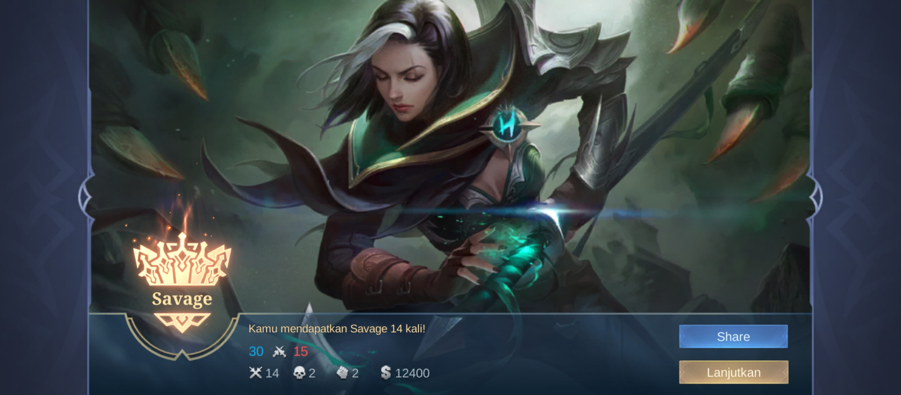

About
Zakky Ananda Astqalani Tindoy
Ini Adalah Web Portfolio saya dan tugas untuk mata kuliah pemrograman Web 1, saya dari kelas 05TPLP023 prodi Teknik Informatika, saya Berdomisili di Pamulang tepatnya di villa pamulang. Saya lahir pada 20 November 2005 Di RS Bhineka Bakti Husada Yang berada di gaplek, pondok cabe. Saya lahir di urus oleh bidan depan rumah saya yg bidan nya juga merupakan dosen stikes saat ini yaitu bidan desy.
Saya Anak semata wayang dari pasangan Bapak dan Ibu saya, saya hanya tinggal berdua dengan ibu saya dikarenakan ayah saya pisah dengan ibu saya sejak saya masih kecil. Ayah saya Bekerja sebagai chef kapal dan ibu saya bekerja sebagai ibu rumah tangga. kemudia ibu saya meninggal dunia pada tanggal 14 februari 2025 dikarenakan sakit komplikasi yg dideritanya sejak lama.
Saya sangat bersyukur telah dilahirkan di keluarga yg sangat baik, walaupun saya hanya tinggal berdua dengan ibu saya tapi saya sangat bahagia dikarenakan ibu saya sangat perhatian kepada saya, ibu saya selalu mendukung apapun yg saya lakukan, ibu saya juga selalu mengingatkan saya untuk selalu berdoa dan bersyukur kepada Allah SWT. Saya juga bersyukur telah dikelilingi oleh teman-teman yg baik, saya memiliki banyak teman di sekolah, kampus, maupun di lingkungan sekitar rumah saya.
Pendidikan
SMK - Letris Indonesia 2
2020 - 2023
Saya Smk Di smk letris Indonesia 2 jurusan Rekayasa Perangkat Lunak, di smk ini saya belajar banyak hal tentang dunia IT, mulai dari dasar komputer, dasar desain grafis menggunakan Photoshop Dan Corel Draw, pemrograman web, pemrograman desktop, dan lain-lain. Dikarenakan saya jurusan RPL jadi saya lebih fokus ke pembelajaran tentang pemrograman.
Pada kelas 1 saya belum praktik coding tapi baru belajar UML mulai dari Flowchart, DFD, ERD, dan lain-lain, dikarenakan masih zaman covid saya Belajar secara daring. Pada Kelas 2 saya mulai belajar tentang pemrograman desktop menggunakan bahasa pemrograman Java, dimulai dari belajar oop hingga MVC untuk membuat aplikasi kasir yg terhubung ke database. Pada kelas 3 baru saya belaar coding mulai dari HTML, CSS, PHP, JavaScript, MySQL, dan lain-lain.
Saya Ujikom di SMK Letris Indonesia 2 pada bulan April 2023, dan Alhamdulillah saya lulus semua ujian teori dan praktik, Saya Website hotel yg dimana dapat melakukan pemesanan hotel berbasis crud beserta halaman admin nya yg mengambil data dari database local di mysql. Setelah lulus smk saya melanjutkan pendidikan ke jenjang yang lebih tinggi yaitu Universitas Pamulang di prodi Teknik Informatika
SMP - Terpadu Darussalam
2017 - 2020
Saya SMP Di SMP Terpadu Darussalam Reni Jaya, di SMP ini saya belajar banyak hal tentang ilmu pengetahuan umum, agama, dan lain-lain. Di SMP ini saya juga aktif di pramuka dan mengikuti pasus , saya juga mengikuti silat sebagai ekstrakulikuler wajib seperti pramuka. Sisanya saya lupa wkwkkwk
Hobby
saya memiliki Hobby Bermain Game dan Menonton anime serta mendengakan music dan mengkoleksi IEM
Game
Game yg Biasa saya mainkan sehari hari adalah mobile legend tetapi saya juga memainkan game lain seperti Basara 2 menggukana emulator ps2 seperti pcsx2 dan juga saya bermain game tekken 8 di steam.
Hero yg saat ini saya sering mainkan adalah Benedeta.
Music
to be continue........